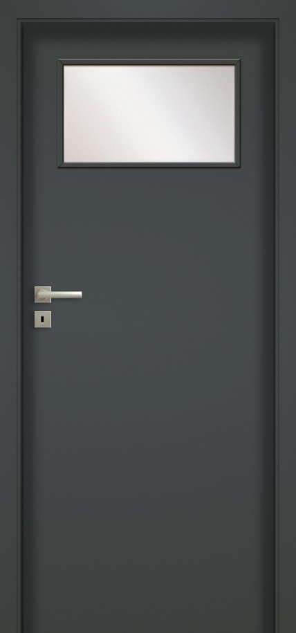

haptické


00

03SD

04

05

06
Dvere sú vyrobené z dreveného rámu pokrytého dvoma hladkými doskami HDF s povrchom UNI MAT PLUS. Štandardnú výplň tvorí vrstva so štruktúrou "včelie plásty". Materiál UNI MAT PLUS sa vyznačuje hodvábnym povrchom odolným voči odtlačkom prstov.
Štandardný dizajn
Jednobodový zámok s rozstupom 72 mm (splachovací systém) alebo magnetický (bezsplachovací systém), s kľúčom (rozstup 90 mm), s kľúčom (rozstup 85 mm) alebo s toaletným zámkom (rozstup 90 mm)
Závesy: typ Z - pre rám DIN alebo skrytý DUO nikel satén (2 ks)

Špeciálne skosené hrany na spojnici vertikálneho a horizontálneho rámu

príplatok: vrstvené sklo VSG 22.1 v čiernej farbe
grafit
titán
Biela
béžová
Čierna
láva
kameň
indigo
mech